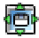
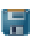
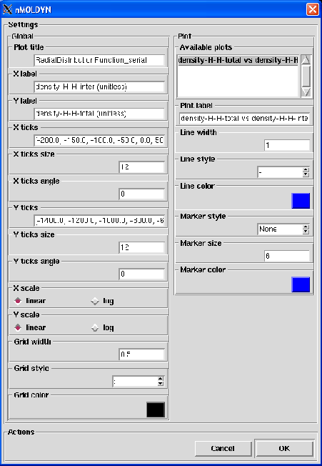
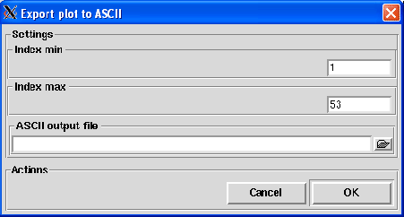

Plot
Format: not an editable etry
Default: no plot displayed
Description: this widget contain the space allocated to display the plots. The plots are generated using
matplotlib python graphical library. At the botton of the widget, there are seven buttons that allows to perform
various actions on the displayed plot. These buttons are the following:
- takes you to the first view.
- the Back is akin to the web browser
Back button. It is used to navigate back between previously defined views. It has no meaning unless,
the Pan/Zoom and Zoom to rect mode modes, defined below, have been used. This is analogous to trying to
click Back on your web browser before visiting a new page. Nothng happens.
- the Forward is akin to the web browser
Forward button. It is used to navigate forward between previously defined views. It has no meaning unless,
the Pan/Zoom and Zoom to rect mode modes, defined below, have been used. This is analogous to trying to
click Forward on your web browser before visiting a new page. Nothing happens.
- activates the Pan/Zoom mode.
The Pan/Zoom button has two modes: pan and zoom. Then put your mouse somewhere over an axes.
- Pan mode: press the left mouse button and hold it, dragging it to a new position. When you release it, the data under
the point where you pressed will be moved to the point where you released. If you press 'x' or 'y' while panning, the motion
will be constrained to the x or y axis, respectively.
- Zoom mode: press the right mouse button, dragging it to a new position. The x axis will be zoomed in proportionate to
the rightward movement and zoomed out proportionate to the leftward movement. Ditto for the y axis and up/down motions. The
point under your mouse when you begin the zoom should remain in place, allowing you to zoom to an arbitrary point in the
figure. You can use the modifier keys 'x' and 'y' or 'CONTROL' to constrain the zoom to the x axis, y axis, or aspect ratio
preserve, respectively.
- activates the
Zoom to rect mode. Put your mouse somewhere over the plot and press the left mouse button. Drag the mouse while
holding the button to a new location and release. The plots limits will be zoomed to the rectangle you have defined. There is
also a 'zoom out to rectangle' in this mode with the right button, which will place your entire plot in the region defined
by the rectangle you have defined.
-  pops up a dialog from
which you can adjust some basic positional plot parameters.
-  pops up a file browser from which you can save the plot to a file.
You can save your plot to the following format:
- Portable Networks Graphics (.png)
- Enhance Metafile (.emf)
- Encapsulated Postscript (.eps)
- Portable Document Format (.pdf)
- Postscript (.ps)
- Raw RGBA bitmap (.raw,.rgba)
- Scalable Vector Graphics (.svg)
Pressing Return or clicking on the OK button will display the plot for the selected NetCDF variables. Once a plot is
displayed, you can change some plot settings by clicking on Settings button that will pop up the dialog
shown in figure 4.65.
Figure 4.65:
The dialog from which the plot settings are defined.
|

|
From this dialog you can change many plot parameters such as the plot title, the x and y labels, the x and y ticks size,
the x and y scales, the line colors, the line width ...
You can also export the curent plot to an ASCII file by clicking on Export plot. This will pop up the dialog shown in figure
4.66.
Figure 4.66:
The dialog from which the current plot can be exported to an ASCII file.
|

|
From this dialog, you will be asked for the range of values to export and a file name for the output ASCII file.
Finally, pressing the Cancel button will close the plot dialog.